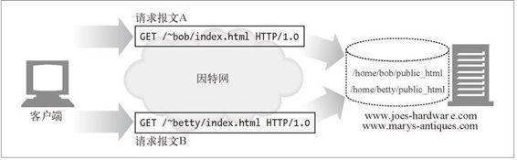

5.7 第四步——对资源的映射及访问
Web 服务器是资源服务器。它们负责发送预先创建好的内容，比如 HTML 页面或 JPEG 图片，以及运行在服务器上的资源生成程序所产生的动态内容。
在 Web 服务器将内容传送给客户端之前，要将请求报文中的 URI 映射为 Web 服务 器上适当的内容或内容生成器，以识别出内容的源头。
5.7.1 docroot
Web 服务器支持各种不同类型的资源映射，但最简单的资源映射形式就是用请求 URI 作为名字来访问 Web 服务器文件系统中的文件。通常，Web 服务器的文件系统中会有一个特殊的文件夹专门用于存放 Web 内容。这个文件夹被称为文档的根目录（document root，或 docroot）。Web 服务器从请求报文中获取 URI，并将其附加在文档根目录的后面。
在图 5-8 中，有一条对 /specials/saw-blade.gif 的请求到达。这个例子中 Web 服务器的文档根目录为 /usr/local/httpd/files。Web 服务器会返回文件 /usr/local/httpd/files/specials/saw-blade.gif。
图 5-8 将请求 URI 映射为本地 Web 服务器上的资源
在配置文件 httpd.conf 中添加一个 DocumentRoot 行就可以为 Apache Web 服务器设置文档的根目录了：
DocumentRoot /usr/local/httpd/files
服务器要注意，不能让相对 URL 退到 docroot 之外，将文件系统的其余部分暴露出来。比如，大多数成熟的 Web 服务器都不允许这样的 URI 看到 Joe 的五金商店文档根目录上一级的文件：
http://www.joes-hardware.com/../
虚拟托管的docroot
虚拟托管的 Web 服务器会在同一台 Web 服务器上提供多个 Web 站点，每个站点在服务器上都有自己独有的文档根目录。虚拟托管 Web 服务器会根据 URI 或 Host 首部的 IP 地址或主机名来识别要使用的正确文档根目录。通过这种方式，即使请求 URI 完全相同，托管在同一 Web 服务器上的两个 Web 站点也可以拥有完全不同的内容了。
图 5-9 中的服务器托管了两个站点：www.joes-hardware.com 和www.marys-antiques.com。服务器可以通过 HTTP 的 Host 首部，或根据不同的 IP 地址来区分不同的 Web 站点。
当请求 A 到达时，服务器会获取文件 /docs/joe/index.html。
当请求 B 到达时，服务器会获取文件 /docs/mary/index.html。
图 5-9 虚拟托管的请求会使用不同的文档根目录
对大多数 Web 服务器来说，配置虚拟托管的文档根目录是很简单的。对常见的 Apache Web 服务器来说，需要为每个虚拟 Web 站点配置一个 VirtualHost 块，而且每个虚拟服务器都要包含 DocumentRoot（例 5-3）。
例 5-3 Apache Web 服务器虚拟主机的 docroot 配置
<VirtualHost www.joes-hardware.com>
ServerName www.joes-hardware.com
DocumentRoot /docs/joe
TransferLog /logs/joe.access_log
ErrorLog /logs/joe.error_log
</VirtualHost>
<VirtualHost www.marys-antiques.com>
ServerName www.marys-antiques.com
DocumentRoot /docs/mary
TransferLog /logs/mary.access_log
ErrorLog /logs/mary.error_log
</VirtualHost>
...
更多与虚拟托管有关的信息可以参考 18.2 节。
用户的主目录docroot
Docroot 的另一种常见应用是在 Web 服务器上为人们提供私有的 Web 站点。通常会把那些以斜杠和波浪号（/~）开始，后面跟着用户名的 URI 映射为此用户的私有文档根目录。私有 docroot 通常都是用户主目录下那个名为 public_html 的目录，但也可将其配置为其他值（参见图 5-10）。

图 5-10 不同用户有不同的 docroot
5.7.2 目录列表
Web 服务器可以接收对目录 URL 的请求，其路径可以解析为一个目录，而不是文件。我们可以对大多数 Web 服务器进行配置，使其在客户端请求目录 URL 时采取不同的动作。
返回一个错误。
不返回目录，返回一个特殊的默认“索引文件”。
扫描目录，返回一个包含目录内容的 HTML 页面。
大多数 Web 服务器都会去查找目录中一个名为 index.html 或 index.htm 的文件来代表此目录。如果用户请求的是一个目录的 URL，而且这个目录中有一个名为 index.html（或 index.htm）的文件，服务器就会返回那个文件的内容。
在 Apache Web 服务器上，可以用配置指令 DirectoryIndex 来配置要作为默认目录文件使用的文件名集合。指令 DirectoryIndex 会按照优先顺序列出所有可以作为目录索引文件使用的文件名。下列配置行会使 Apache 在收到一个目录 URL 请求时，在目录中搜索命令中列出来的任意一个文件：
DirectoryIndex index.html index.htm home.html home.htm index.cgi
如果用户请求目录 URI 时，没有提供默认的索引文件，而且没有禁止使用目录索引，很多 Web 服务器都会自动返回一个 HTML 文件，此文件中会列出那个目录里的文件名，以及每个文件的大小和修改日期，还包括到每个文件的 URI 链接。使用这个文件列表可能会很方便，但有些好事者也可以通过它在 Web 服务器上找到一些通常找不到的东西。
可以通过以下 Apache 指令禁止自动生成目录索引文件：
Options -Indexes
5.7.3 动态内容资源的映射
Web 服务器还可以将 URI 映射为动态资源——也就是说，映射到按需动态生成内容的程序上去（参见图 5-11）。实际上，有一大类名为应用程序服务器的 Web 服务器会将 Web 服务器连接到复杂的后端应用程序上去。Web 服务器要能够分辨出资源什么时候是动态的，动态内容生成程序位于何处，以及如何运行那个程序。大多数 Web 服务器都提供了一些基本的机制以识别和映射动态资源。
图 5-11 Web 服务器可以提供静态资源和动态资源
Apache 允许用户将 URI 路径名组件映射为可执行文件目录。服务器收到一条带有可执行路径组件的对 URI 的请求时，会试着去执行相应服务器目录中的程序。例如，下列 Apache 配置指令就表明所有路径以 /cgi-bin/ 开头的 URI 都应该执行在目录 /usr/local/etc/httpd/cgi-programs/ 中找到的相应文件：
ScriptAlias /cgi-bin/ /usr/local/etc/httpd/cgi-programs/
Apache 还允许用户用一个特殊的文件扩展名来标识可执行文件。通过这种方式就可以将可执行脚本放在任意目录中了。下面的 Apache 配置指令说明要执行所有以 .cgi 结尾的 Web 资源：
AddHandler cgi-script .cgi
CGI 是早期出现的一种简单、流行的服务端应用程序执行接口。现代的应用程序服务器都有更强大更有效的服务端动态内容支持机制，包括微软的动态服务器页面（Active Server Page）和 Java servlet。
5.7.4 服务器端包含项
很多 Web 服务器还提供了对服务器端包含项（SSI）的支持。如果某个资源被标识为存在服务器端包含项，服务器就会在将其发送给客户端之前对资源内容进行处理。
要对内容进行扫描，以查找（通常包含在特定 HTML 注释中的）特定的模板，这些模板可以是变量名，也可以是嵌入式脚本。可以用变量的值或可执行脚本的输出来取代特定的模板。这是创建动态内容的一种简便方式。
5.7.5 访问控制
Web 服务器还可以为特定资源进行访问控制。有请求到达，要访问受控资源时，Web 服务器可以根据客户端的 IP 地址进行访问控制，也可以要求输入密码来访问资源。
更多与 HTTP 认证有关的信息请参见第 12 章。